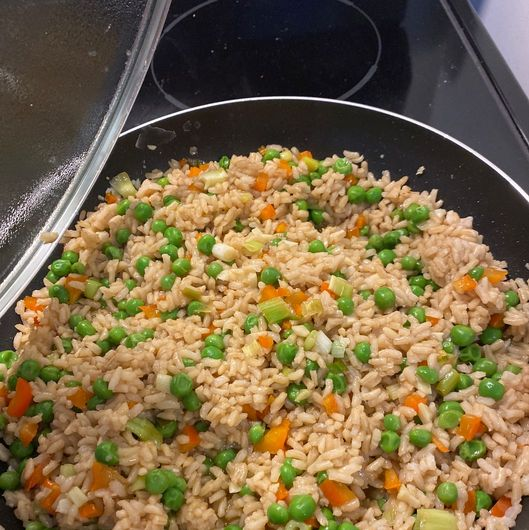

Garlic Chicken Fried Brown Rice

Leftover brown rice is reborn in this chicken fried rice with peppers and onions. Black pepper, paprika, or dried parsley may be used to season after this is cooked.
Ingredients
- 2 tablespoons vegetable oil, divided
- 8 ounces skinless, boneless chicken breast, cut into strips
- ½ red bell pepper, chopped
- ½ cup green onion, chopped
- 4 cloves garlic, minced
- 3 cups cooked brown rice
- 2 tablespoons light soy sauce
- 1 tablespoon rice vinegar
- 1 cup frozen peas, thawed
Directions
- Heat 1 tablespoon of vegetable oil in a large skillet set over medium heat. Add the chicken, bell pepper, green onion and garlic. Cook and stir until the chicken is cooked through, about 5 minutes. Remove the chicken to a plate and keep warm.
- Heat the remaining tablespoon of oil in the same skillet over medium-high heat. Add the rice; cook and stir to heat through. Stir in the soy sauce, rice vinegar and peas, and continue to cook for 1 minute. Return the chicken mixture to the skillet and stir to blend with the rice and heat through before serving.
Go back to homepage